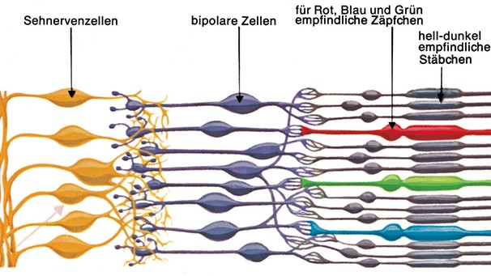
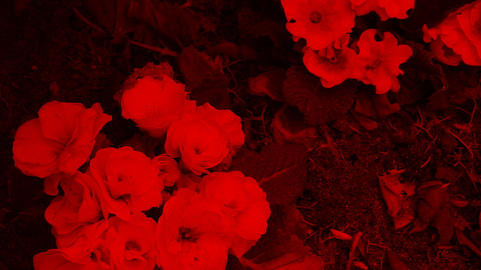
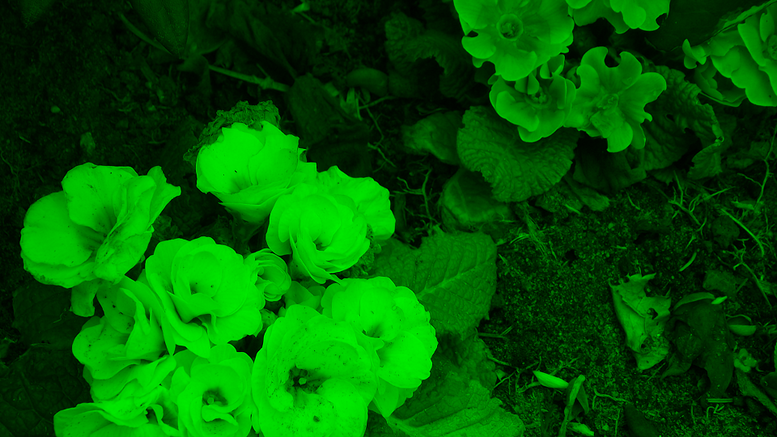
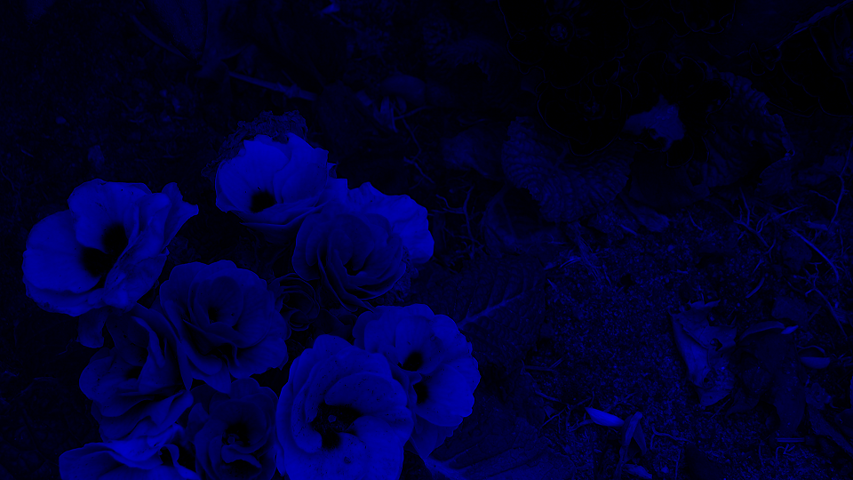
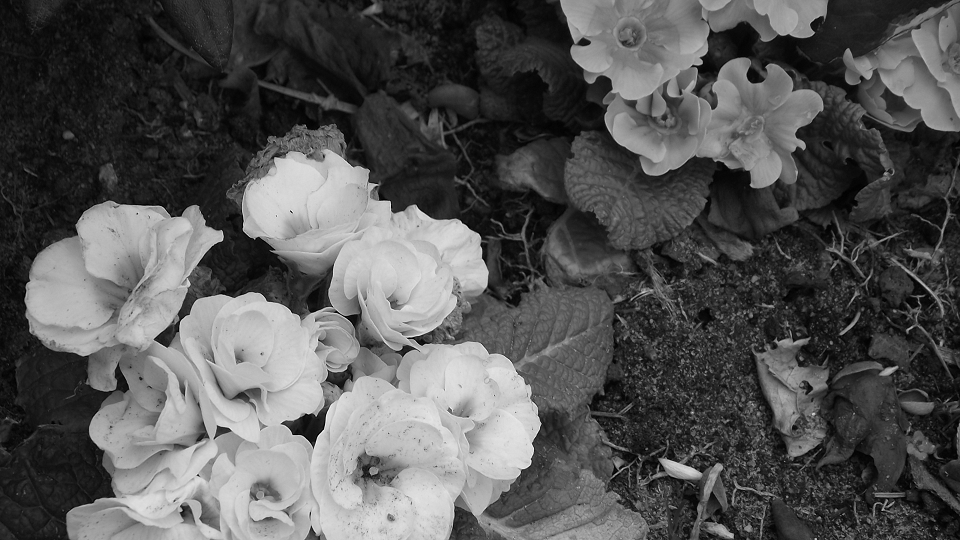
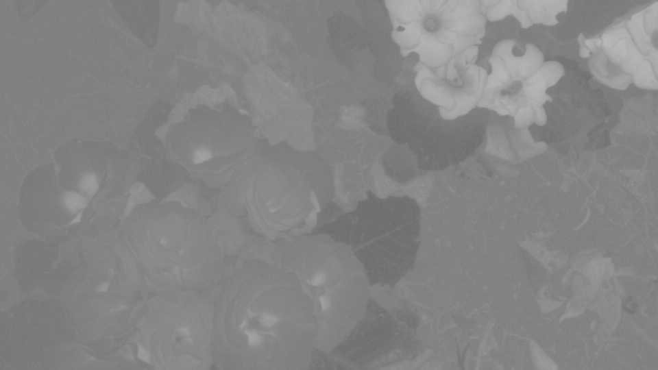
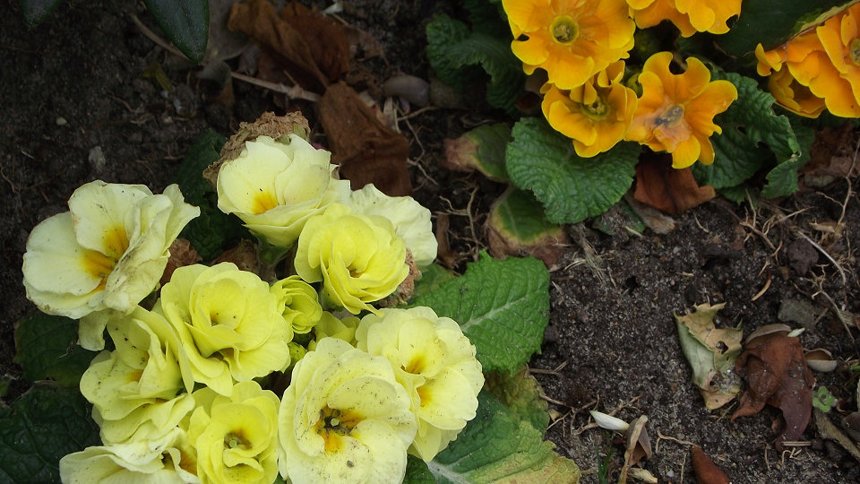

Aufgabe 1: RGB und YCbCr
1A
Warum wird Helligkeits- und Farbinformation getrennt verarbeitet?
a. RGB ist der gebräuchlichste Farbraum bei der Aufzeichnung und Darstellung von Bildern. Hier wird das
Lichtspektrum in seine Rot-, Grün- und Blauanteile aufgespalten. Der YCbCr Farbraum hingegen besteht aus
der Luminanz Y (Helligkeit) und den Farbanteilen (Chrominanz) Cb und Cr. Die RGB Farben eines Bildes
lassen sich also in den YCbCr Farbraum transformieren. Für viele Anwendungen, z.B. die Bildkompression,
ist es günstig, Helligkeits- und Farbinformation getrennt zu verarbeiten. Nenne den physiologischen Grund
dafür!
Der Vorteil dieses Bildraums ist die Anlehnung an dem natürlichen Verhalten des Auges. Wie man auf folgendem Bild sieht haben wir sowohl hell-dunkel empfindliche Stäbchen, als auch RGB empfindliche Zäpfchen im Auge verbaut:

Die unterschiedliche Wahrnehmung von Y gegenüber den Cb- und Cr-Kanälen entspricht also der Entwicklung der Farb- und Helligkeitsverteilung in der Natur. Viele Informationen sind nur oder überwiegend in der Helligkeit gespeichert, die Farbe variiert kaum. So haben wir zum Beispiel bei einem Gebirgszug in grau mit weißem Schnee bedeckt fast keine Farbzüge und die relevanteste Information ist die Helligkeit, also das Y.
Im Laufe der Evolution hat sich unser menschliche Sehsinn an diese Gegebenheiten angepasst. Das Auge kann geringe Helligkeitsunterschiede besser erkennen als kleine Farbtonunterschiede, und diese besser als kleine Farbsättigungsunterschiede.
Als Beispiel: so ist ein Text grau auf schwarz geschrieben gut zu lesen, blau auf rot geschrieben bei gleicher Grundhelligkeit jedoch nur sehr schlecht:

1B
Bild Versionen aus RGB
b. Erstelle aus deinem eigenen Bild Versionen, die nur jeweils den Rot-, Grün- und Blauanteil zeigen.
(Hinweis: Dazu müssen einfach die jeweils anderen Farbwerte auf null gesetzt werden).



1C
Helligkeit Y und die Chrominanzen Cb und Cr
c. Nun erzeuge jeweils ein Bild für Y, Cb und Cr. Lese dafür jedes Pixel ein und berechne die Helligkeit Y
(Luminanzformel!) sowie die Chrominanzen Cb und Cr (Chrominanzformeln!) aus den RGB Werten.


1D
Rekonstruktion
d. Wandle zur Rekonstruktion deines Bildes die YCbCr Werte zurück in RGB

Aufgabe 2: Histogramm
1A
Verteilung der Helligkeiten
Mithilfe eines Histogramms kann die Verteilung (Häufigkeit) der Helligkeiten eines Bildes dargestellt
werden. Erstelle ein Histogramm für das monochrome Detailbild aus Aufgabe 1 (Y - Bild). Lese dafür den
Helligkeitswert der Pixel ein und bestimme die Helligkeitshäufigkeiten (Anzahl gleicher Helligkeiten). Diese
sollen in eine Textdatei geschrieben und als Histogramm dargestellt werden (z.B. in Excel, Java).
 Link zur Tabelle mit den einzelnen Werten
Link zur Tabelle mit den einzelnen Werten
Aufgabe 3: Helligkeit und Kontrast
1A
Mittlere Helligkeit
a. Berechne die mittlere Helligkeit des monochromen Detailbildes aus Aufgabe 1 (Y - Bild). Lese dafür den
Helligkeitswert der Pixel ein. Die mittlere Helligkeit ist die Summe aller Helligkeitswerte geteilt durch die
Anzahl der Bildpunkte. Berechne auch den Kontrast des Bildes, d.h. die Standardabweichung der Helligkeit.
Die mittlere Helligkeit haben wir in Excel berechnet. Hier die Formel dafür:
86.19
1B
Helligkeit verändern
b. Verändere das monochrome Bild in der Helligkeit durch Subtrahieren der Werte h=(-20, -40, -60, -80)
bzw. Addieren der Werte h=(20, 40, 60, 80). Beachte dabei, dass ihr beim Ergebnis der Pixelwertberechnung im 8-Bit-Bereich bleibt. Berechne die Histogramme des hellsten und dunkelsten Bildes.
1C
Kontraständerung
c. Erhöhe bzw. verringere den Kontrast durch Multiplikation mit den Faktoren k=(0.2, 0.4, 0.8, 1.0) sowie
k=(1.5, 2.5, 5.0, 10.0). Was würde bei einer Kontraständerung mit k < 0 passieren (Einfach ausprobieren
und Bild speichern!)?
Berechne auch hier das Histogramm des kontrastärmsten und kontrastreichsten Bildes und vergleiche mit
denen der Helligkeitsänderung. Was haben Helligkeits- und Kontraständerung für eine Auswirkung auf das
Histogramm (Vergleiche auch mit dem Histogramm aus Aufgabe 2)?
richtig